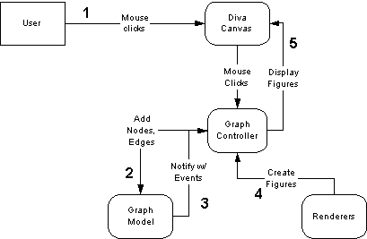
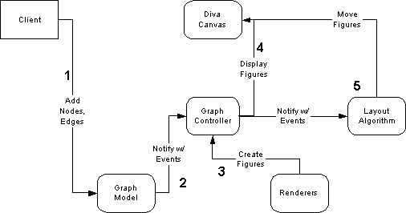
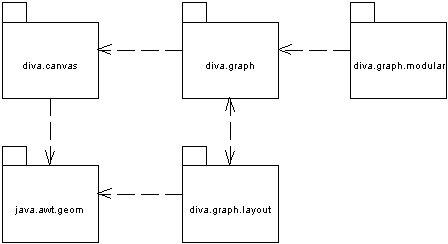
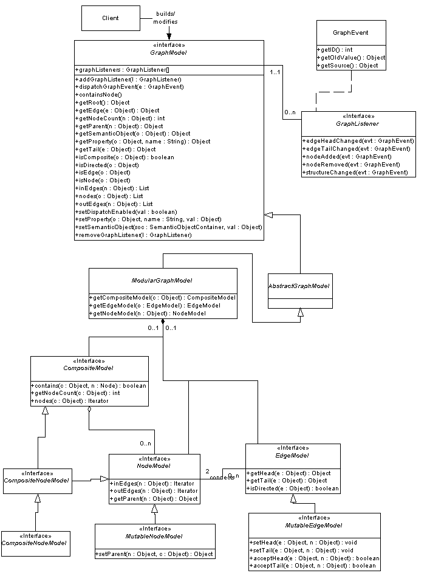

The Diva graph package implements a solid graph visualization foundation. At its heart is a Swing-style MVC data and notification model. Extensible and pluggable graph rendering and layout tools complete the picture. The goal of this document is to give the reader a picture of the package architecture: how the different sub-packages interact at a high level, and how different classes interact at a low level. It is a good document to read to get a casual understanding of the package capabilities, or before jumping into the API documentation.
The basic "flow" of the package is illustrated by the process of adding or removing nodes and edges to a graph model and is helpful for understanding the high-level package architecture. There are two basic scenarios by which graphs may be modified:


One of the package's strengths is its fundamental separation between model and view which makes it easy for applications to create multiple views of a common graph structure and to modularly replace the graph structure. There is one sub-package devoted to a useful modular implementation of this data structure (diva.graph.modular), one for graph layout (diva.graph.layout). There is also a basic implementation of a graph editor, diva.graph.basic, and a schematic editor, diva.graph.schematic.
|
 |
This section describes the key classes and interfaces that make the graph package tick. These interfaces are central to the extensibility of the system. The details of these interfaces and their implementations are provided in the detailed package design documents, linked below.
These interfaces provide an abstraction between the implementation of the graph data structure and any classes which deals with the data structure, such as display clients, graph layout algorithms, and various application-specific controllers which modify the graph structure. Graph model provides the MVC "model" which can have various listeners (see below).
The LayoutTarget interfaces provide an abstract interface between the graph layout algorithms and the display package. In this way, the layout algorithms are not dependent on any particular display package, so for example it is possible to write an optimized display package for large graphs which doesn't depend on Java2D. LayoutTarget provides viewport geometry, access to the graph model which is being viewed, and a map from nodes to figures in the display.
GlobalLayout is an algorithm that operates over the entire graph, and IncrementalLayout is a layout that responds to changes in the graph and tries to preserve the graph's overall look-and-feel as much as possible. Several layout implementations are provided with the package, and these interfaces allows users to write their own algorithms.
These classes make it possible to customize the appearance of a node/edge. Given a node/edge, they return a Figure, which is the visual representation of the data. This provides a clean and simple way for an application to customize its "look and feel".
JGraph and GraphPane are the centerpieces of the graph package, providing a very high-level interface to the rest of the package. JGraph is the Swing widget which is placed in the GUI. GraphPane is the view in which figures are displayed. The controller responds to events from the view and changes in the model and makes the whole package work. NodeController and EdgeController are ways of adding different behaviors for different types of nodes and edges.
The Diva graph model is a general graph data structure interface. Its goal is to act as an intermediary format between applications and graph visualization front-ends. As such, it is designed as a generic graph data structure which attempts to model as closely as possible the minimal features of a typical graph, but with the following special features:
Graphs in the Diva graph package consists of nodes, edges, and composite nodes. A node has incoming and outgoing edges, and a semantic object is whatever data that node represents in an application. A composite node is a node that can contain other nodes. An edge has a tail and head node, and a semantic object.
The GraphModel interface provides a way to traverse the structure of graphs. It provides methods for getting the root of a graph, getting the nodes in a composite, getting the edges coming out of a node, etc. All of the arguments to these methods are of type Object, so that it is possible to backend an implementation with an existing data structure without having to write all sorts of adapter classes.
GraphListener objects can register with a GraphModel to receive notification of changes in the graph via GraphEvents. GraphEvents provide full change information, so that given an event it is possible to figure out the state of the graph before the modification that generated the event was made. Because it is expensive to send events after every graph modification, there is a mechanism for clients to turn off messages while a flurry of inner-loop operations are being performed. When the messages are turned back on again, an algorithm can send a STRUCTURE_CHANGED event to the listeners, telling them to do a full refresh of the graph that was modified. Algorithms can also selectively send graph events during their inner-loops for approximate animation.
The GraphModel interface is useful because it provides a single interface that must be implemented to interface a pre-existing graph data structure to the Diva graph package. However, it does not provide much explicit structure. The diva.graph.modular package is an implementation of GraphModel that allows pluggable node and edge implementations.

diva.graph is the high-level facade of the graph package and responsible for the display of graphs. It contains the graph display widget, JGraph, and a bunch of other user interface components, including visual representations of nodes and edges, and some default node/edge behaviors. This package is strongly dependent on the Diva canvas, but the rest of the graph package is not dependent on this package, so alternative implementations should be easy to write. If your application has no special graph data structure or layout requirements, you should be able to use this package without knowing much at all about the other packages. In fact, if your application has no special display requirements, you should be able to use the whole thing without knowing much about this package either!
JGraph is the centerpiece of the graph package, a customizable Swing widget which allows users to view and interact with graphs. By constructing the widget and placing it in a window, the user can place nodes in the graph, draw edges between the nodes, move the nodes and disconnect/delete the edges. All of this is captured by the following snippet of code:
JFrame f = new JFrame();
f.getContentPane().add("Center", new JGraph());
f.setSize(800, 600);
f.setVisible(true);
The graph pane ultimately is responsible for the display of the graph. However, the display smarts and customization facilities are located elsewhere. GraphPane is simply a diva.canvas.GraphicsPane with a few graph-specific methods for setting up the relation with the GraphView and GraphController classes, described below. It contains Diva canvas figures, which happen to represent graph entities, but it doesn't understand the graph semantics per se.
All of the customization of the graph display and editing behavior is done within the GraphController.
The GraphController class is responsible for rendering nodes and edges into figures and associating interactors with those figures. It does this by deferring to a contained NodeController or EdgeController which is associated with each type of node and edge. Each controller in turn contains a NodeRenderer or EdgeRenderer which is responsible for rendering the node or edge, and an interactor that is assoicated with the figure. The TypedNodeRenderer class allows specific renderers based on the type of the user data in the respective node that is being rendered. This makes it simple to use the same controller with different types of nodes
The GraphController is also responsible for listening to events from the graph model that may represent changes to the graph that did not go through the GraphController itself. In many cases these changes result in the creation of graph objects that have not been placed by the user. In this case, a layout engine can be used to place newly-added nodes and route newly-added edges.
The Diva graph layout package provides an assortment of node layout and edge routing facilities for the graph model package. It is designed to operate independently of any particular display implementation, so any graph layout/edge routing algorithm written using the conventions established in this package should be applicable to any display implementation that obeys a few assumptions about the graph display (e.g. that nodes have bounding boxes, edges have endpoints, etc.). The package's architecture supports the following features:

A fundamental aspect of the graph package design is that we want a graph model to be shared among multiple views, each of which might contain a different geometric configuration for the nodes and edges. As a result of this design, the graph model (on which layout algorithms operate) contains no information about display geometry. (This also makes sense in terms of MVC because the "model" should have no knowledge of the "view). However by this design, layout algorithms must have a dependence on the display code, meaning that without some special interface between layout and view, layout algorithms are tied to the implementation of the display. The LayoutTarget interface defines a contract that the display code has to satisfy in order to support the algorithms in the layout package. It decouples the layout and display so that any display implementation that satisfies this interface may be operated on by the layout algorithms.
Global layout algorithms operate on an entire graph at once, trying to maximize the layout quality of the graph. In contrast, incremental layout algorithms operate on changes to the graph structure and attempts to maximize the layout quality of the graph and minimize the impact on the layout of the pieces of the graph not directly effected by that change. So another way to phrase it is that incremental layout algorithms respect the previous layout of the graph, while global layout algorithms do not. Given these differences, it makes sense that the two types of algorithms have different interfaces.
In these interfaces it is clear that global layout algorithms are applied to the entirety of a graph and need not maintain state, while incremental layout algorithms must maintain state, and respond to changes in the graph structure by implementing the GraphListener interface. It is also possible to implement global layout in terms of incremental layout, and vice versa, though it is not clear how useful either of these constructions is. A class which implements global layout in terms of local layout could do so be simply calling the incremental layout's graphChanged() method for each layout call. A class which implements incremental layout in terms of global layout could do so by simply calling the global layout's layout() method for each change in the graph. While the former construction might be appropriate, it is likely that the second construction would defeat the point of incremental layout by throwing away all the useful delta information.